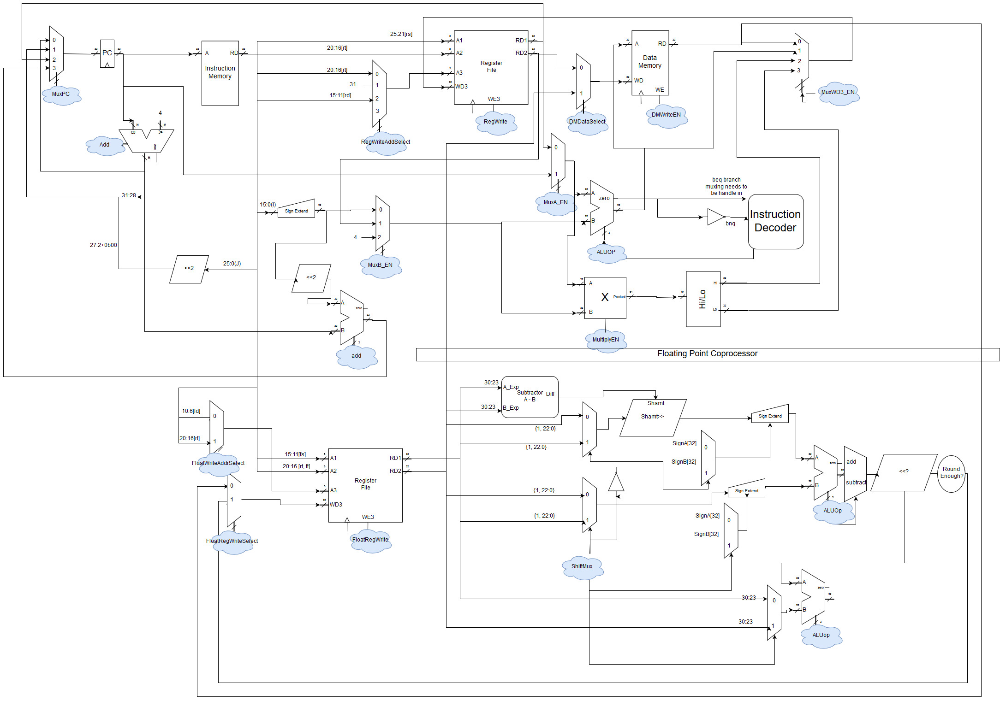
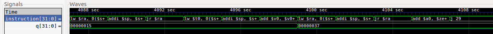
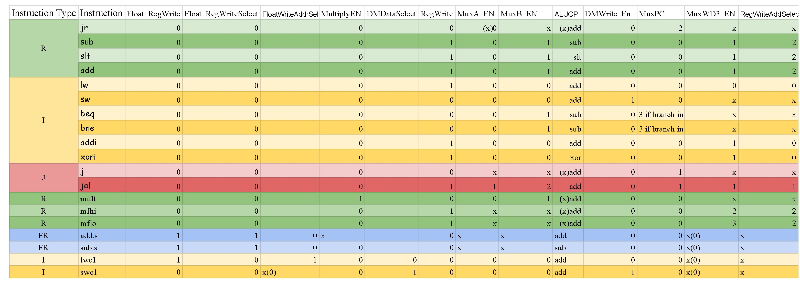
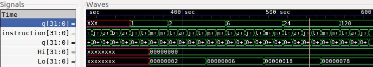
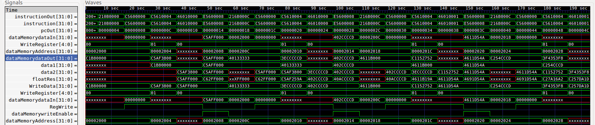

You can view our CPU block diagram by clicking below.
Single Cycle CPU
We implemented a total of 12 MISP-compliant instructions that allows us to perform basic computations with our CPU. Our implementation has been demonstrated to function properly without bugs. Its capabilities were demonstrated with two recursive calculations: the Fibonacci numbers and the minimal step numbers in the Tower of Haoni. For example, the snippet below of the waveforms output by our CPU when we tested our Fibonacci function are shown above. These waveforms clearly display the moment that the q output value of register two in our register file transitioned to its final correct and stable state of 0x37, which is fifty-five in the decimal base-ten system. Given that we had implemented our assembly code to look for the tenth number in the Fibonacci sequence, and fifty-five is the tenth number in that sequence, we know our CPU has successfully ran a variety of instructions, including recursive calls.
Floating Point Unit
In the FPU part of our project, we extended the original 12-instruction CPU with 7 additional instructions for multiplication and floating point addition and subtraction. The 19 instructions and their associated control logic in shown in the figure below.
To verify the multiplication unit, we computed the factorial of integers. As you can see, the results in Lo[31:0], expressed in hexdecimal, proceeded correctly for 2!, 3!, 4! and 5!.
To verify the floating unit, we performed computations shown below. For instance, at 80 sec, 0x40133333(2.29999995232, data1) plus 0xC5AF3800(-5607.0, data2) equals 0xC5AF259A(-5604.70019531, floatRes).
You can find out more about our project in the related links on the left.